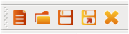

[ Under Translation ]
Main Components
Tupi is a suite of tools for 2D animation created for 8-100 years old children. When you think of Tupi, think of it as a toolbox full of different components, each designed for a specific task. Now, let's take a look at each of the parts that make our work environment, this is the first step you must take to start using Tupi.
Note: Because we are still in a beta phase of this development, it is likely that some options and/or features within the interface are modified or change of place with every release, much of the information found in this manual is subject to correction in future versions.
The following is a typical display of the running application:

Fig #4. Tupi's GUI
Now, let's take a closer look to its components:

Fig #5. Diagram of the Tupi's Components
- Top Side Menu: it is the conventional menu located at the top side of most programs. It is separated by categories (File, Edit, Insert, Window, Modules and Help), all options of the program.

Fig #6. Barra de Menú Superior
- Panel de Funciones Básicas: se encuentra compuesto por botones asociados a las tareas básicas en la administración de archivos del programa tales como: Crear nuevo proyecto, abrir proyecto existente, guardar, guardar como y cerrar proyecto actual.

Fig #7. Panel de Funciones Básicas
- Área de Trabajo: es el área principal de la aplicación, es decir, el espacio donde diseñas, construyes y visualizas tus animaciones. El área de trabajo se encuentra conformada por cuatro pestañas, cada una de las cuales contiene uno de los siguientes módulos:

Fig #8. Pestañas de las áreas de trabajo
- Módulo de Ilustración: a través de su interfaz, en este módulo construyes los gráficos que harán parte de cada marco que estará contenido en tu animación. En otras palabras, este módulo no es otra cosa más que un pequeño editor de gráficos vectoriales muy sencillo (¡por ahora!).
- Módulo de Animación: básicamente, se trata de un visor que puedes consultar en cualquier momento para darte una idea de como está quedando tu animación.
- Módulo de Ayuda: este es el módulo que precisamente estás consultando en este momento.
- Módulo de Noticias: es una ventana directa a nuestra cuenta en Twitter. Así podrás estar enterado de las últimas noticias sobre este proyecto, como el lanzamiento de nuevas versiones, las funcionalidades implementadas en la versión de desarrollo, novedades, etc.
- Barra Lateral Izquierda: en este componente se encuentran tres botones asociados a algunas funcionalidades del módulo de ilustración:

Fig #9. Barra Lateral Izquierda
- Paleta de colores: este botón despliega un panel a través del cual puedes escoger el color o gradiente que quieras utilizar al momento de pintar con cualquier tipo de brocha.
- Propiedades de Brocha: este botón despliega un panel con las propiedades actuales de la brocha, como por ejemplo, el grueso de la misma y algunas características del trazo.
- Librería de objetos: este botón despliega un panel con la interfaz de administración de objetos de la librería asociada al proyecto. Si tienes un objeto o una imagen en particular que quieras almacenar y reutilizar en diferentes marcos de tu animación, este componente te será de mucha utilidad.
- Barra Lateral Derecha: similar a la izquierda, sólo que contiene botones asociados al proceso de animación:

Fig #10. Barra Lateral Derecha
- Manejador de Escenas: este botón despliega un panel que permite la administración de las escenas que componen una animación. Aún no sabes qué es una escena? No te preocupes, más adelante hablaremos de ello.
- Tabla de Exposición: este botón despliega un panel que permite visualizar la tabla de exposición de cada escena. Aunque suena complejo, esta tabla en realidad simplemente es una lista de los marcos sobre los cuales vas a ilustrar tu animación. A través de este componente, puedes administrar las capas y los marcos de tu proyecto. ¿Ya sabes qué es una capa? Veamos una definición sencilla: imagina que tomas un poco de pintura roja y cubres una hoja de papel con este color y dejas que se seque, luego aplicas color verde sobre la misma hoja, esperas un rato y entonces aplicas azul. A pesar de que al final, tu hoja lucirá del último color que usaste, en realidad sabes que debajo hay otros colores. Piensa en cada uno de esos colores, como capas, es decir, niveles de pintura que tú mismo defines sobre un marco. Las capas son muy útiles para lograr cierto tipo de efectos y técnicas que descubrirás con la práctica.
- Manual de Ayuda: este botón despliega el manual que estás consultando en este momento.
- Barra Inferior: sobre esta región encontrarás un sólo botón, se trata de la opción que activa el panel de la Línea de Tiempo. Este herramienta, bastante utilizada por animadores de otros programas, te permite administrar capas y marcos, además de visualizar la forma en que se desenvuelven los fragmentos de tu animación en tiempo real.

Fig #11. Barra Inferior
- Panel de Propiedades: esta zona se crea temporalmente cada vez que haces clic sobre uno de los botones que se encuentran en las barras laterales o en la inferior. Aunque en la imagen inicial (Fig. #5), el panel aparece en la parte derecha de la interfaz, dependiendo de donde se encuentre el botón que escojas, puede aparecer del lado izquierdo o inclusive, en la parte inferior. Si vuelves a dar clic sobre el botón que inicialmente escogiste, entonces el panel de propiedades se cierra.
- Barra de Estado: ubicada en la parte inferior del programa, esta barra por ahora sólo cumple una misión: desplegar las coordenadas (x,y) en las que se encuentra el cursor del ratón a medida que se mueve sobre el Área de Trabajo en el Módulo de Ilustración.

Fig #12. Barra de Estado